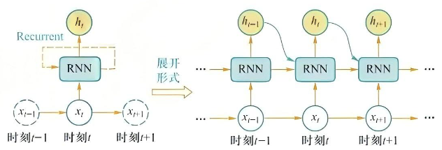
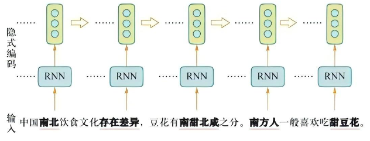
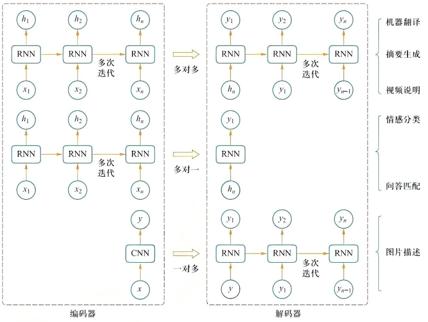
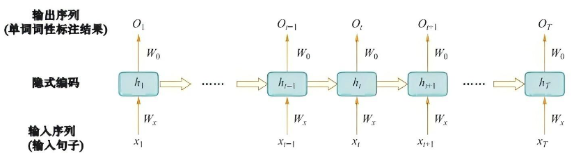
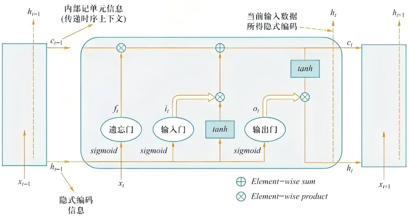
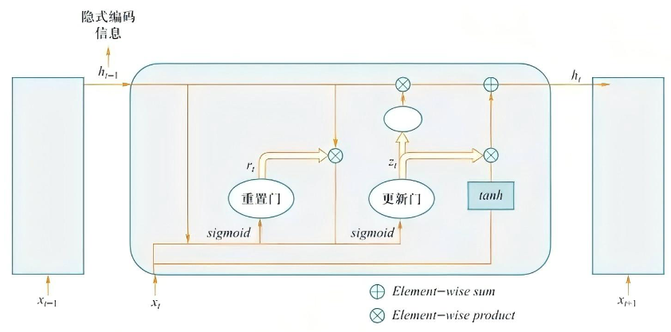

5.5
循环神经网络（recurrent neural network，RNN）是一类处理序列数据（如文本句子、视频帧等）时所采用的网络结构。前文介绍的前馈神经网络或卷积神经网络所需要处理的输入数据一次性给定，难以处理存在前后依赖关系的数据。
1990 年，Jeffrey L.Elman 提出循环神经网络的最初概念框架（Elman, 1990）。循环神经网络的本质是希望模拟人所具有的记忆能力，在学习过程中记住部分已经出现的信息，并利用所记住的信息影响后续结点的输出。循环神经网络在自然语言处理，例如语音识别、情感分析、机器翻译等领域有重要应用。
5.5.1 循环神经网络模型
图 5.15 展示了循环神经网络的结构。由“循环”两字可知，循环神经网络在处理数据过程中构成了一个循环体。对于一个序列数据，在每一时刻 \(t\)，循环神经网络单元会读取当前输入数据 \(x_t\) 和前一时刻输入数据 \(x_{t-1}\) 所对应的隐式编码结果 \(h_{t-1}\)，一起生成 \(t\) 时刻的隐式编码结果 \(h_t\)。接着将 \(h_t\) 向后传，参与生成 \(t+1\) 时刻输入数据 \(x_{t+1}\) 的隐式编码 \(h_{t+1}\)。如此循环处理，直至该序列数据被处理完毕。

图 5.15 循环神经网络结构及其展开形式示意
可见，时刻 \(t\) 得到的隐式编码 \(h_t\) 是由上一时刻的隐式编码 \(h_{t-1}\) 和当前输入的 \(x_t\) 共同参与生成的，这可认为隐式编码 \(h_{t-1}\) 已经“记忆”了 \(t\) 时刻之前的时序信息，或者说前序时刻信息影响了后续时刻信息的处理。与前馈神经网络和卷积神经网络在处理时需要将所有数据一次性输入不同，循环神经网络能够刻画序列数据中存在的时序依赖关系。
在时刻 \(t\)，一旦得到当前输入数据 \(x_t\)，循环神经网络会结合前一时刻 \(t-1\) 得到的隐式编码 \(h_{t-1}\)，如下产生当前时刻的隐式编码 \(h_t\)： $$ h_t = \varPhi\left(U \times x_t + W \times h_{t-1}\right) $$ 这里 \(\varPhi(\cdot)\) 是激活函数，一般可为 sigmoid 或者 tanh 激活函数，\(U\) 与 \(W\) 为模型参数。从这里可看出，当前时刻的隐式编码输出 \(h_t\) 不仅仅与当前输入数据 \(x_t\) 相关，也与网络已有的“记忆”\(h_{t-1}\) 有着密不可分的联系。
为了更加直观地展示在循环神经网络中前序时刻信息如何被“记住”来影响当前时刻的信息编码，这里对上述公式进行如下变化： $$ \begin{aligned} h_t &= \varPhi\left(U \times x_t + W \times h_{t-1}\right) = \varPhi\left(U \times x_t + W \times \varPhi\left(U \times x_{t-1} + W \times h_{t-2}\right)\right) \ &= \varPhi\left(U \times \underbrace{x_t}{t时刻输入} + W \times \varPhi\left(U \times \underbrace{x}{t-1时刻输入} + W \times \varPhi\left(U \times \underbrace{x + \dots\right)\right)\right) \end{aligned} $$}}_{t-2时刻输入
从上式可见，当前时刻编码中的确包含历史信息，这也说明了循环神经网络能够记忆的原因，使得一些需要记忆历史过往信息的任务能够被循环神经网络有效处理。
实际上，按照时间将循环神经网络展开后（见图5.15），可以得到一个和前馈神经网络相似的网络结构。这个网络结构可利用反向传播算法和梯度下降算法来训练模型参数，这种训练方法称为“沿时间反向传播算法（backpropagation through time，BPTT）”。由于循环神经网络每个时刻都有一个输出，因此在计算循环神经网络的损失时，通常需要将所有时刻（或者部分时刻）的损失进行累加。
下面以自然语言为例来解释循环神经网络是如何处理时序数据的。假设希望将自然语言句子进行分类，分类为饮食、体育、文化等不同类别。首先，对文本语句进行分词操作，如图5.16所示，循环神经网络在读入每个单词后，产生对应单词的隐式编码，并利用其来参与后续单词的隐式编码。一旦得到每个单词的隐式编码，通常可以通过如下方法得到一个句子的向量编码：① 考虑到句子中所有单词的信息均被后向传递，因此将最后一个单词的输出作为整个句子的向量编码表示；② 将每个单词的隐式编码进行加权平均，将加权平均结果作为句子的向量编码表示。这样，一旦得到句子的向量编码表示，就可以利用某个分类器对句子的类别进行判断。
在图5.16中，“南北”“存在差异”“南甜北咸”“南方人”“甜豆花”等单词之间存在前后依赖，这种依赖会被有效利用起来，得到各单词的隐式编码及句子的向量表达。

图 5.16 循环神经网应用示例
在循环神经网络中，根据输入序列数据与输出序列数据中所包含“单元”的多寡，循环神经网络可以实现“多对多”（即输入和输出序列数据中包含多个单元，常用于机器翻译）、“多对一”（即输入序列数据包含多个单元，输出序列数据只包含一个单元，常用于文本的情感分类）和“一对多”（即输入序列数据包含一个单元，输出序列数据包含多个单元，常用于图像描述生成）三种模式，如图5.17所示。

图 5.17 输入输出不同情况下循环神经网络结构示例
循环神经网络虽然具有一定的记忆能力，但当彼此相关信息在序列中相距较远时，循环神经网络无法捕捉到数据之中的时序依赖关系。除此之外，当输入序列过长时，循环神经网络也容易出现梯度消失（gradient vanishing）或者梯度爆炸（gradient exploding）问题。
图 5.18 以词性标注为例给出了一个输入序列数据 \((x_1,\dots,x_{t-1},x_t,x_{t+1},\dots,x_T)\) 被循环神经网络处理的示意。在图 5.18 中，时刻 \(t\) 输入数据 \(x_t\)（文本中的单词）的隐式编码为 \(h_t\)，其真实输出为 \(y_t\)（单词词性），模型预测 \(x_t\) 的词性是 \(o_t\)。参数 \(W_x\) 将 \(x_t\) 映射为隐式编码 \(h_t\)，参数 \(W_o\) 将 \(h_t\) 映射为预测输出 \(o_t\)，\(h_{t-1}\) 通过参数 \(W_h\) 参与 \(h_t\) 的生成。图中，\(W_x\)，\(W_o\) 和 \(W_h\) 是复用参数。

图 5.18 循环神经网络中梯度传递示意
假设时刻 \(t\) 的隐式编码如下得到：\(h_t=\tanh\left(W_x x_t + W_h h_{t-1}+b\right)\)。使用交叉熵损失函数计算时刻 \(t\) 预测输出与实际输出的误差 \(E_t\)。显然，整个序列产生的误差为 $$ E=\frac{1}{2}\sum_{t=1}^{T} E_t $$
下面介绍如何根据时刻 \(t\) 所得误差更新参数 \(W_x\)。在时刻 \(t\) 计算所得 \(O_t\) 不仅涉及时刻 \(t\) 的 \(W_x\)，而且也涉及前面所有时刻的 \(W_x\)，按照链式求导法则，\(E_t\) 在对 \(W_x\) 求导时，也需要对前面时刻的 \(W_x\) 依次求导，然后再将求导结果进行累加，即 $$ \frac{\partial E_t}{\partial W_x}=\sum_{i=1}^{t}\frac{\partial E_t}{\partial O_t}\frac{\partial O_t}{\partial h_t}\left(\prod_{j=i+1}^{t}\frac{\partial h_j}{\partial h_{j-1}}\right)\frac{\partial h_i}{\partial W_x} $$ 其中 $$ \prod_{j=i+1}^{t}\frac{\partial h_j}{\partial h_{j-1}}=\prod_{j=i+1}^{t}\tanh'\times W_h $$
令 \(t=3\)，则有 $$ \frac{\partial E_3}{\partial W_x}=\frac{\partial E_3}{\partial O_3}\frac{\partial O_3}{\partial h_3}\frac{\partial h_3}{\partial W_x} +\frac{\partial E_3}{\partial O_3}\frac{\partial O_3}{\partial h_3}\frac{\partial h_3}{\partial h_2}\frac{\partial h_2}{\partial W_x} +\frac{\partial E_3}{\partial O_3}\frac{\partial O_3}{\partial h_3}\frac{\partial h_3}{\partial h_2}\frac{\partial h_2}{\partial h_1}\frac{\partial h_1}{\partial W_x} $$
由于 \(\tanh\) 函数的导数取值位于 \(0\sim1\) 区间，对于长序列而言，若干多个 \(0\sim1\) 区间的小数相乘，会使得参数求导结果很小，引发梯度消失问题。\(E_t\) 对 \(W_h\) 的求导类似，这里就不列出了。为了缓解梯度消失问题，长短时记忆网络（long short-term memory，LSTM）模型被提出。
5.5.2 长短时记忆网络
与简单的循环神经网络结构不同，长短时记忆网络中引入了内部记忆单元（internal memory cell）和门（gate）结构来对当前时刻输入信息及前序时刻所生成信息进行整合和传递。这里，内部记忆单元中的信息可视为对“历史信息”的累积。
常见的 LSTM 模型中有输入门（input gate）、遗忘门（forget gate）和输出门（output gate）三种门结构。对于给定的当前时刻输入数据 \(x_t\) 和前一时刻隐式编码 \(h_{t-1}\)，输入门、遗忘门和输出门通过各自参数对其编码，分别得到三种门结构的输出 \(i_t\)、\(f_t\) 和 \(o_t\)。
在此基础上，再进一步结合前一时刻内部记忆单元信息 \(c_{t-1}\) 来更新当前时刻内部记忆单元信息 \(c_t\)，最终得到当前时刻的隐式编码 \(h_t\)。表 5.4 描述了长短时记忆网络中所用符号及其含义。
表5.4 长短时记忆网络中所用符号及其含义
| 符号 | 内容描述或操作 |
|---|---|
| \(x_t\) | 时刻 \(t\) 的输入数据 |
| \(i_t\) | 输入门的输出：\(i_t=\text{sigmoid}\left(W_{xi}x_t + W_{hi}h_{t-1}+b_i\right)\) （\(W_{xi}\)、\(W_{hi}\) 和 \(b_i\) 为输入门的参数） |
| \(f_t\) | 遗忘门的输出：\(f_t=\text{sigmoid}\left(W_{xf}x_t + W_{hf}h_{t-1}+b_f\right)\) （\(W_{xf}\)、\(W_{hf}\) 和 \(b_f\) 为遗忘门的参数） |
| \(o_t\) | 输出门的输出：\(o_t=\text{sigmoid}\left(W_{xo}x_t + W_{ho}h_{t-1}+b_o\right)\) （\(W_{xo}\)、\(W_{ho}\) 和 \(b_o\) 为输出门的参数） |
| \(c_t\) | 内部记忆单元的输出：\(c_t=f_t\odot c_{t-1}+i_t\odot \tanh\left(W_{xc}x_t + W_{hc}h_{t-1}+b_c\right)\) （注：\(W_{xc}\)、\(W_{hc}\) 和 \(b_c\) 为记忆单元的参数。输入门 \(i_t\) 控制有多少信息流入当前时刻内部记忆单元 \(c_t\)，遗忘门控制上一时刻内部记忆单元 \(c_{t-1}\) 中有多少信息可累积到当前时刻内部记忆单元 \(c_t\)） |
| \(h_t\) | 时刻 \(t\) 输入数据的隐式编码：\(h_t=o_t\odot \tanh\left(c_t\right)=o_t\odot \tanh\left(f_t\odot c_{t-1}+i_t\odot \tanh\left(W_{xc}x_t + W_{hc}h_{t-1}+b_c\right)\right)\) （注：输入门、遗忘门和输出门的信息 \(i_t、f_t、o_t\) 一起参与得到 \(h_t\)） |
| \(\odot\) | 两个向量中对应元素按位相乘（element-wise product）。例如，\([10\ 6\ 3\ 7] \odot [0.2\ 0.1\ 0.8\ 0.5] = [2\ 0.6\ 2.4\ 3.5]\) |
当给定序列数据中当前时刻 \(t\) 的输入数据 \(x_t\) 和前一时刻的隐式编码 \(h_{t-1}\) 时，根据表 5.4 和图 5.19，可按照如下公式计算内部记忆单元信息和隐式编码：
输入门信息输出：\(i_t=\text{sigmoid}\left(W_{xi}x_t + W_{hi}h_{t-1}+b_i\right)\)
遗忘门信息输出：\(f_t=\text{sigmoid}\left(W_{xf}x_t + W_{hf}h_{t-1}+b_f\right)\)
输出门信息输出：\(o_t=\text{sigmoid}\left(W_{xo}x_t + W_{ho}h_{t-1}+b_o\right)\)
内部记忆单元信息输出：\(c_t=f_t \odot c_{t-1}+i_t \odot \tanh\left(W_{xc}x_t + W_{hc}h_{t-1}+b_c\right)\)
隐式编码输出：\(h_t=o_t \odot \tanh\left(c_t\right)\) 或者 \(h_t=o_t \odot \tanh\left(f_t \odot c_{t-1}+i_t \odot \tanh\left(W_{xc}x_t + W_{hc}h_{t-1}+b_c\right)\right)\)

图 5.19 长短时记忆网络模型
输入门、遗忘门和输出门通过各自参数对当前时刻输入数据 \(x_t\) 和前一时刻隐式编码 \(h_{t-1}\) 进行处理后，利用 sigmoid 对处理结果进行非线性映射，因此三种门结构的输出 \(i_t、f_t\) 和 \(o_t\) 的值域为 \((0,1)\)。正是由于三个门结构的输出值位于 \(0\sim1\) 之间的向量，因此其在信息处理中起到了“调控开关”的“门”作用。三个门结构所输出向量的维数、内部记忆单元的维数和隐式编码的维数均相等。
注：在每个时刻 \(t\)，只有内部记忆单元信息 \(c_t\) 和隐式编码 \(h_t\) 这两种信息起到了对序列信息进行传递的作用；只有 \(h_t\) 作为本时刻的输出用于分类等处理。
以输入门 \(i_t=\text{sigmoid}\left(W_{xi}x_t + W_{hi}h_{t-1}+b_i\right)\) 为例，在 sigmoid 函数作用下，假设输入门 \(i_t\) 的取值为 \((0.05,\ 0.1,\ 0.8)\)，则通过 \(i_t \odot \tanh\left(W_{xc}x_t + W_{hc}h_{t-1}+b_c\right)\) 中按位相乘 \(\odot\) 操作，输入门会“阻断”一些信息进行后续操作（如 0.05 和 0.1 所对应按位相乘的信息），也会“放入”一些信息进行后续操作（如 0.8 所对应按位相乘的信息）。当然，如果门的某一位取值为 0，表示这一位所对应的信息为全闭，禁止信息通过；如果门的某一位取值为 1，表示这一位所对应的信息为全开，允许信息全部通过。遗忘门不允许一些信息后向传递，从另外一个侧面而言是为了关注需要关注的信息。
从 \(c_t=f_t \odot c_{t-1}+i_t \odot \tanh\left(W_{xc}x_t + W_{hc}h_{t-1}+b_c\right)\) 可以看出，对当前时刻 \(t\) 所对应内部记忆单元中信息的调整涉及遗忘门信息、\(t-1\) 时刻所对应内部记忆单元中的信息、输入门信息和 \(t-1\) 时刻的隐式编码。
由于 sigmoid 函数的值域在 \((0,1)\) 之间，输入门、遗忘门和输出门三种门结构采用 sigmoid 这一非线性映射函数起到了信息“控制门”的作用。在内部记忆单元和隐式编码中，使用 tanh 这一非线性映射函数而没有继续使用 sigmoid 非线性映射函数，其原因在于 tanh 函数的值域为 \((-1,1)\)，使得 tanh 函数在进行信息整合时可起到信息“增（为正）”或“减（为负）”的效果。
在介绍循环神经网络时，谈到了根据误差来更新参数存在梯度消失问题，下面介绍 LSTM 如何避免梯度消失问题。
对于 \(c_t=f_t \odot c_{t-1}+i_t \odot \tanh\left(W_{xc}x_t + W_{hc}h_{t-1}+b_c\right)\)，有如下求导结果存在： $$ \frac{\partial c_t}{\partial c_{t-1}}=f_t+\frac{\partial f_t}{\partial c_{t-1}}\times c_{t-1}+\dots $$ 可见，\(\dfrac{\partial c_t}{\partial c_{t-1}}\) 求导的结果至少大于或等于 \(f_t\)，即遗忘门的输出结果。如果遗忘门选择保留旧状态，则这一求导结果就接近 1（或者接近向量 1），使得梯度存在，从而避免梯度消失问题。也就是说，LSTM 通过引入门结构，在从 \(t\) 到 \(t+1\) 过程中引入加法来进行信息更新，避免了梯度消失问题。
整体来看，内部记忆单元信息 \(c_t\) 和隐式编码 \(h_t\) 这两种信息起到了对序列信息进行传递的作用。内部记忆单元信息 \(c_t\) 好比人脑的长时记忆，隐式编码 \(h_t\) 代表了短时记忆。
5.5.3 门控循环单元
门控循环单元（gated recurrent unit, GRU）是一种对 LSTM 简化的深度学习模型。与长短时记忆网络相比，GRU 不再使用记忆单元来传递信息，仅使用隐藏状态来进行信息传递。因此，相比长短时记忆网络，GRU 有更快的计算速度。
GRU 只包含更新门（update gate）和重置门（reset gate）两个门结构（见图 5.20）。

图 5.20 GRU网络模型
给定当前时刻输入数据 \(x_t\) 和前一时刻隐式编码 \(h_{t-1}\)，GRU 利用更新门和重置门来输出当前时刻的隐式编码，并且通过隐式编码将信息向后传递。记更新门和重置门信息为 \(z_t\) 和 \(r_t\)，GRU 的信息更新如下：
更新门信息输出：\(z_t=\text{sigmoid}\left(W_z x_t + U_z h_{t-1}+b_z\right)\)
重置门信息输出：\(r_t=\text{sigmoid}\left(W_r x_t + U_r h_{t-1}+b_r\right)\)
隐式编码输出：\(h_t=\left(1-z_t\right)\odot h_{t-1}+z_t \odot \tanh\left(W_h x_t + U_h\left(r_t \odot h_{t-1}\right)+b_h\right)\)
与循环神经网络一样，这里的 \(W_z、U_z、b_z、W_r、U_r、b_r、W_h、U_h\) 和 \(b_h\) 都是模型参数，需要通过训练优化。
更新门的作用类似于长短时记忆模型中的遗忘门和输入门。它决定要忘记哪些信息，以及哪些新信息需要被添加，用于控制前一时刻的状态信息被保留到当前状态中的程度。更新门的值越大，说明前一时刻的状态信息保留越多。
重置门用于控制忽略前一时刻的状态信息的程度。重置门的值越小，说明信息可通过的程度越低，信息被忽略得越多。